📊 Executive Summary
🏆 Winner: Decision Tree
Best Overall Model selected for production deployment based on comprehensive evaluation across 7 models.
- ✅ Highest F1-Score: 85.30% (best balanced performance)
- ✅ Excellent Recall: 90.98% (catches 91% of attacks)
- ✅ Fastest Inference: 0.09 seconds (real-time capability)
- ✅ High Accuracy: 99.74% on unseen test data
- ✅ Interpretable: Explainable decisions for security analysts
Dataset Information
- Dataset: CICIDS2017 (Canadian Institute for Cybersecurity)
- Total Network Flows: 2,830,743
- Train/Val/Test Split: 70% / 15% / 15%
- Features: 69 standardized numerical features
- Classes: 15 (1 BENIGN + 14 attack types)
- Class Distribution: Highly imbalanced (80.3% BENIGN traffic)
📈 Dataset Overview
Distribution of Network Traffic Classes
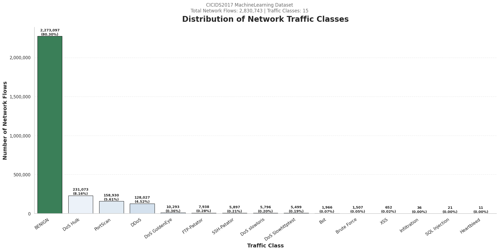
Distribution of Network Traffic Classes (Log Scale)
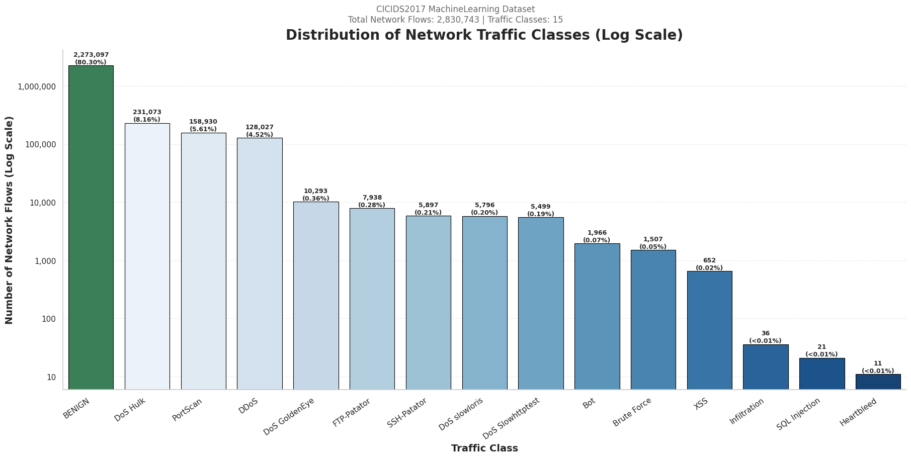
Percentage Distribution of Network Traffic Classes
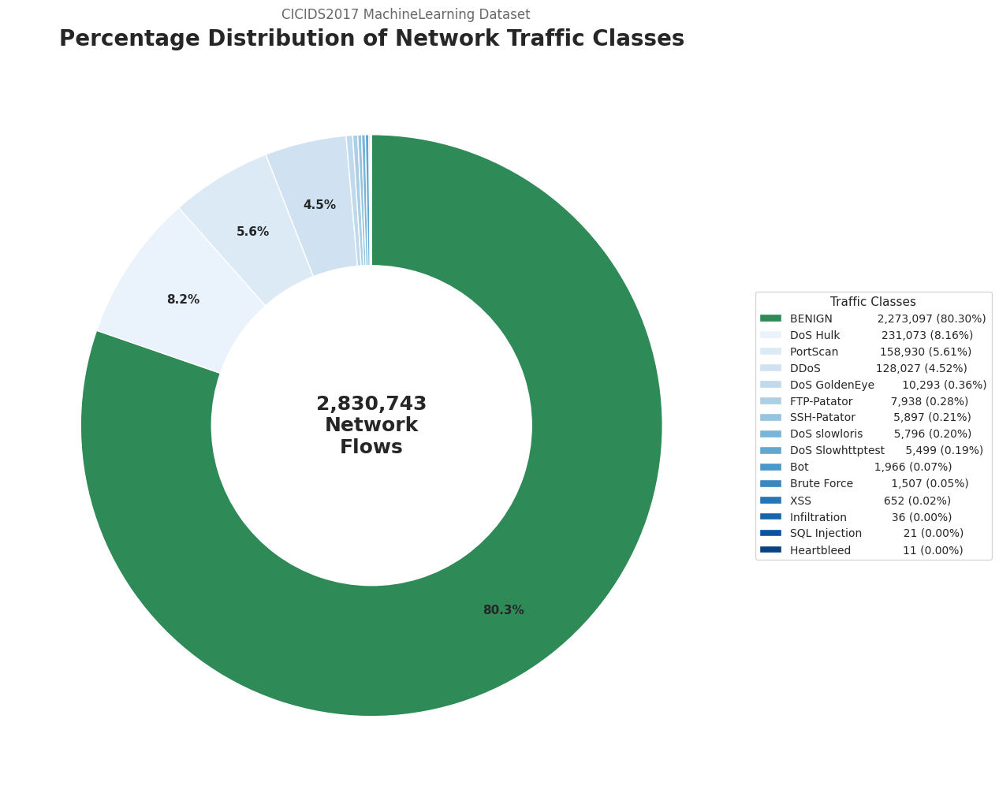
Data Quality Analysis
Missing Value Analysis
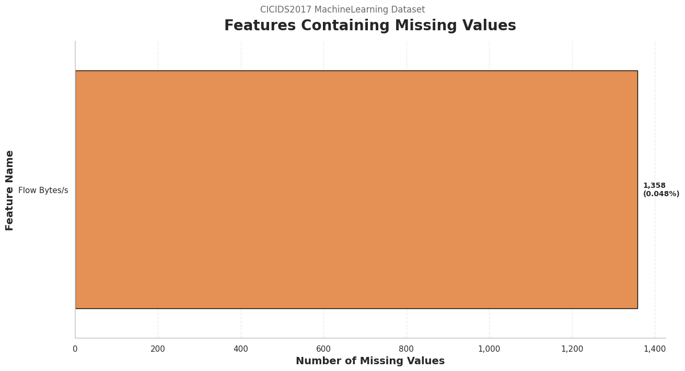
Infinite Value Analysis
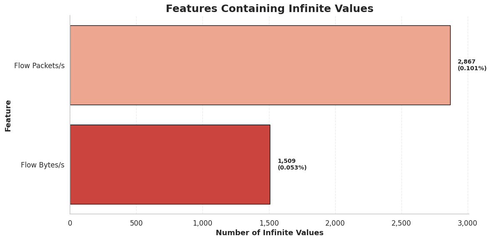
🎯 Model Performance Comparison
Complete Performance Metrics
| Rank | Model | Category | F1-Score | Accuracy | Precision | Recall | ROC-AUC | Inference (sec) |
|---|---|---|---|---|---|---|---|---|
| 🥇 1 | Decision Tree | ML | 85.30% | 99.74% | 83.02% | 90.98% | 97.23% | 0.09 |
| 🥈 2 | Random Forest | ML | 79.31% | 99.17% | 85.30% | 84.69% | 99.96% | 5.47 |
| 🥉 3 | XGBoost | ML | 76.28% | 99.88% | 79.80% | 74.83% | 99.99% | 36.71 |
| 4 | Logistic Regression | ML | 27.57% | 66.07% | 24.02% | 65.22% | 91.89% | 0.14 |
| 5 | Artificial Neural Network | DL | 63.81% | 99.56% | 70.95% | 62.60% | 98.62% | 28.08 |
| 6 | LSTM | DL | 60.39% | 98.24% | 63.19% | 59.76% | 99.71% | 106.27 |
| 7 | 1D-CNN | DL | 42.73% | 95.20% | 49.54% | 39.85% | 93.77% | 49.55 |
🔍 Individual Model Performance
1. Logistic Regression (Baseline)
Performance: F1: 27.57% | Accuracy: 66.07% | Inference: 0.14 sec
Analysis: Baseline model struggled with class imbalance despite balanced class weights. Linear model insufficient for complex multiclass intrusion detection.
Logistic Regression - Confusion Matrix
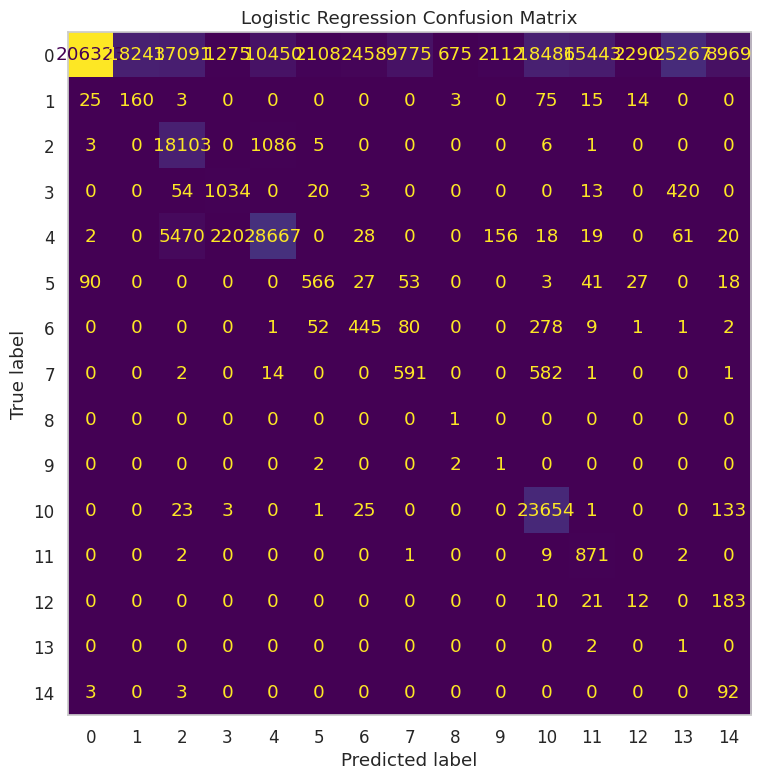
2. Decision Tree 🏆 (Production Model)
Performance: F1: 85.30% | Accuracy: 99.74% | Recall: 90.98% | Inference: 0.09 sec
Analysis: Best overall model selected for production. Excellent balance between precision (83.02%) and recall (90.98%), critical for security applications. Fastest inference enables real-time detection.
Decision Tree - Confusion Matrix
3. Random Forest
Performance: F1: 79.31% | Accuracy: 99.17% | Precision: 85.30% | ROC-AUC: 99.96%
Analysis: Highest precision model - best for scenarios where false positives are costly. Near-perfect ROC-AUC indicates excellent class separation. Slower inference (5.47 sec) vs Decision Tree.
Random Forest - Feature Importance (Top 20)
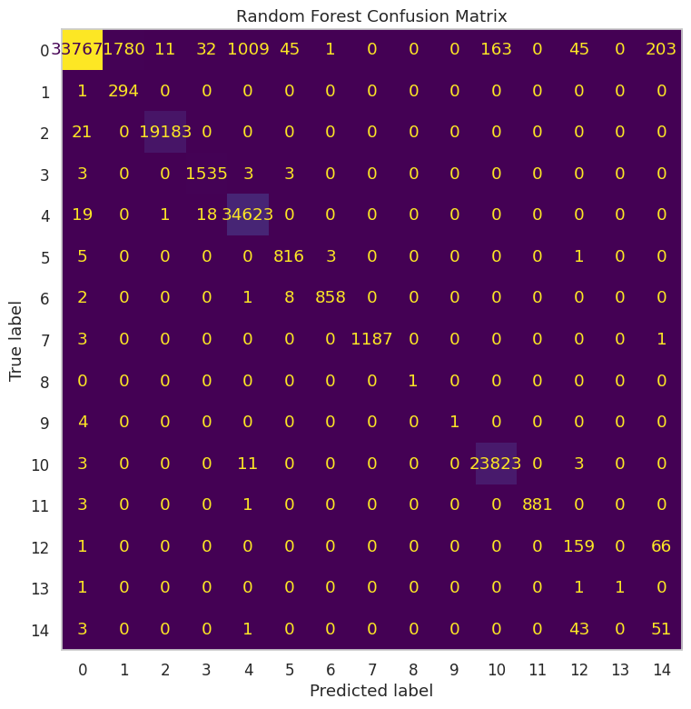
Random Forest - Confusion Matrix
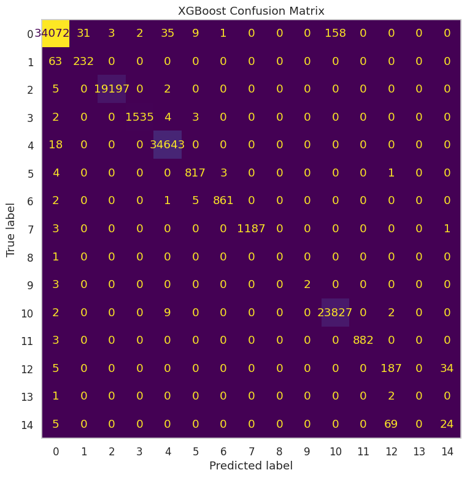
4. XGBoost
Performance: F1: 76.28% | Accuracy: 99.88% | ROC-AUC: 99.99%
Analysis: Highest accuracy and near-perfect ROC-AUC. Excellent for batch scoring where speed is less critical. Longer training (748 sec) and inference (36.71 sec) times.
XGBoost - Training History (Loss)
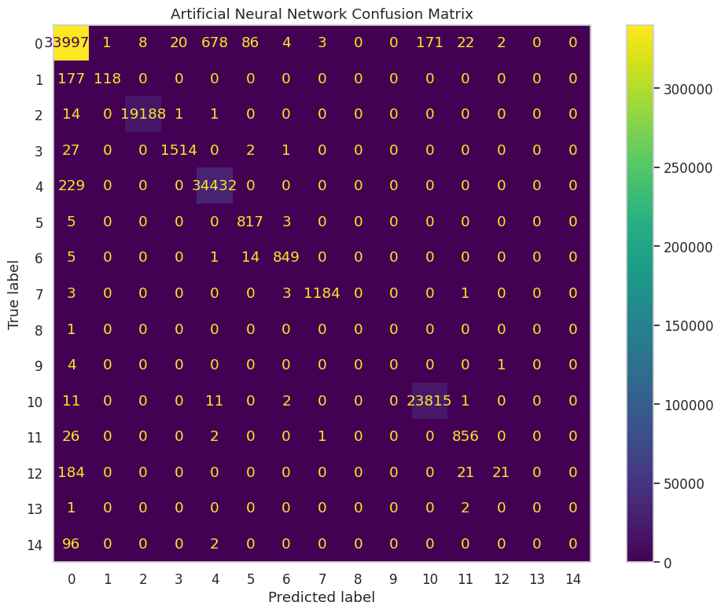
XGBoost - Confusion Matrix
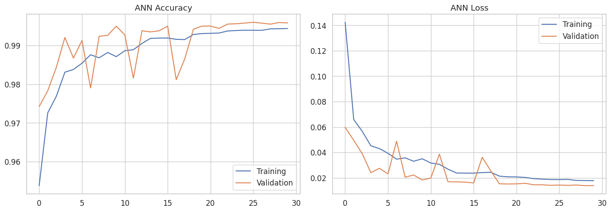
5. Artificial Neural Network (ANN)
Performance: F1: 63.81% | Accuracy: 99.56% | ROC-AUC: 98.62%
Analysis: Best deep learning model but underperformed vs ML models. Training time: 1,244 sec. Suggests feature engineering already captured relevant patterns.
ANN - Training & Validation Loss
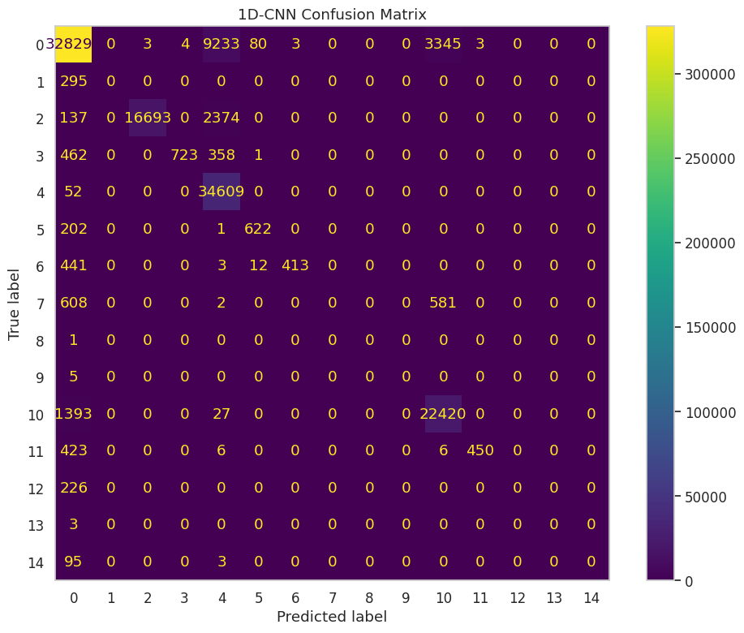
ANN - Training & Validation Accuracy
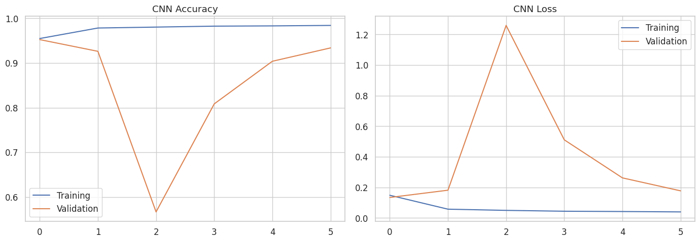
ANN - Confusion Matrix
6. 1D Convolutional Neural Network (1D-CNN)
Performance: F1: 42.73% | Accuracy: 95.20% | ROC-AUC: 93.77%
Analysis: Lowest F1-score among all models. Spatial convolution patterns less effective for tabular intrusion detection data. Training time: 1,935 sec.
1D-CNN - Training & Validation Loss
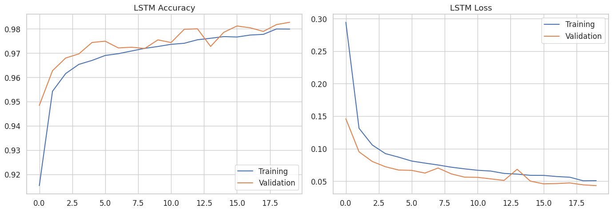
1D-CNN - Confusion Matrix
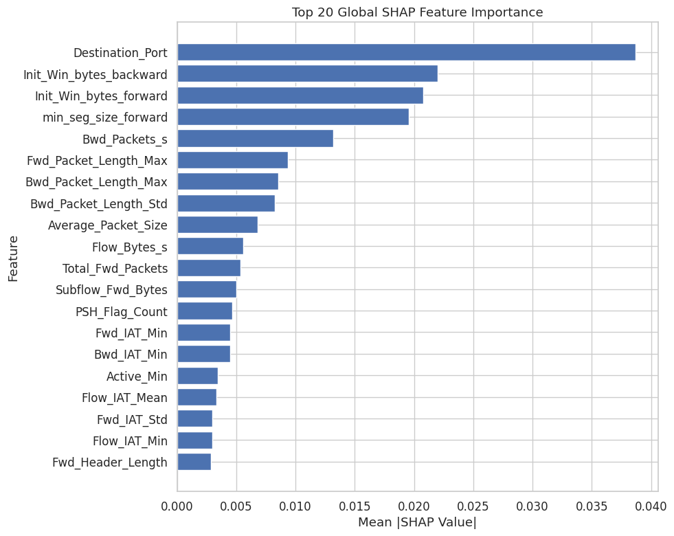
7. Long Short-Term Memory (LSTM)
Performance: F1: 60.39% | Accuracy: 98.24% | ROC-AUC: 99.71%
Analysis: Second-best deep learning model. Very long training time (8,155 sec ≈ 2.3 hours) with modest performance gain. Temporal patterns not critical for this dataset.
LSTM - Training & Validation Loss
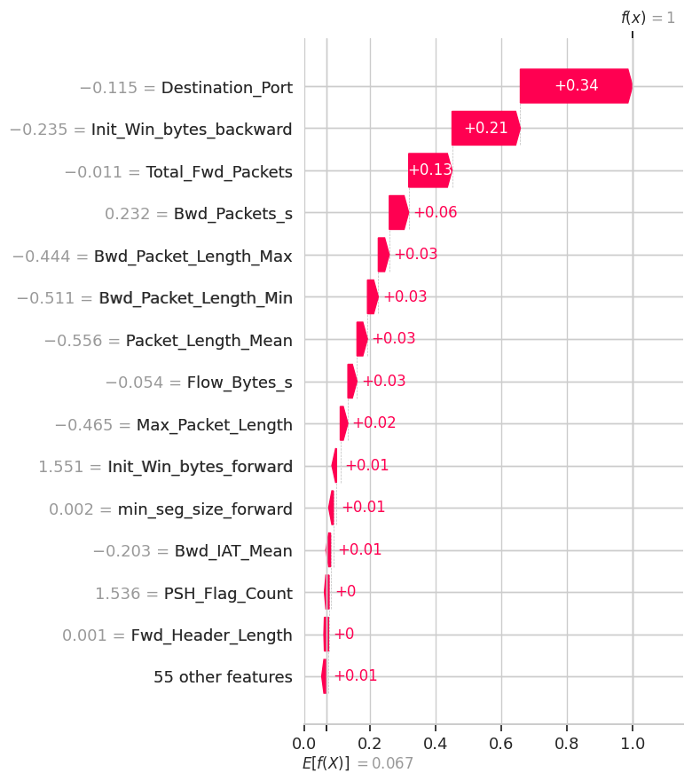
LSTM - Confusion Matrix
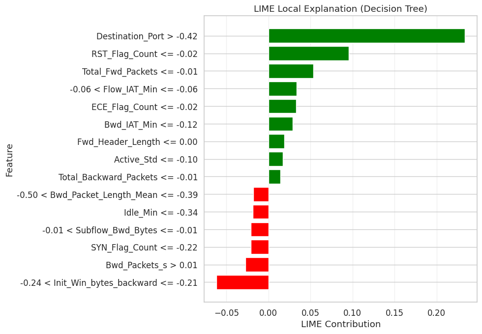
📌 Key Findings & Recommendations
Major Findings
- Tree-Based Models Dominate: Decision Tree, Random Forest, and XGBoost achieved top F1-scores (76-85%), significantly outperforming deep learning models (43-64%).
- Deep Learning Underperformed: Despite longer training times (1,200-8,000 sec), DL models couldn't match traditional ML performance, suggesting effective feature engineering.
- Decision Tree Selected: Best F1-score (85.30%), excellent recall (90.98%), and fastest inference (0.09 sec) make it ideal for production.
- Class Imbalance Handled: Macro F1-score and balanced class weights ensured fair evaluation across all 15 attack classes.
Production Deployment Recommendations
For Real-Time Detection:
- ✅ Primary Model: Decision Tree (fast, accurate, balanced)
- ✅ Fallback Model: Random Forest (if false positives costly)
For Batch Analysis:
- ✅ Primary Model: XGBoost (highest accuracy and ROC-AUC)
- Speed less critical in batch mode
Future Improvements
- 🔄 Ensemble Decision Tree + Random Forest for optimal precision/recall balance
- 🎯 Hyperparameter optimization using Bayesian methods (Optuna)
- 📊 Collect more samples of rare attacks (Heartbleed, SQL Injection, Infiltration)
- 🚀 Model quantization for faster inference
- 📈 A/B testing framework for model comparison in production
⚡ Computational Performance Summary
Training Time Comparison
| Rank | Model | Training Time (sec) | Training Time (min) | Category |
|---|---|---|---|---|
| 1 | Decision Tree | 189.04 | 3.15 | ⚡ Fastest |
| 2 | Random Forest | 194.69 | 3.24 | ⚡ Fast |
| 3 | XGBoost | 748.26 | 12.47 | 🟡 Moderate |
| 4 | Logistic Regression | 1,180.56 | 19.68 | 🟡 Moderate |
| 5 | ANN | 1,243.98 | 20.73 | 🟡 Moderate |
| 6 | 1D-CNN | 1,934.68 | 32.24 | 🔴 Slow |
| 7 | LSTM | 8,154.83 | 135.91 | 🔴 Very Slow |
Inference Time Comparison
| Rank | Model | Inference Time (sec) | Throughput (samples/sec) | Category |
|---|---|---|---|---|
| 1 | Decision Tree | 0.09 | ~4,717,911 | ⚡ Fastest |
| 2 | Logistic Regression | 0.14 | ~3,032,943 | ⚡ Very Fast |
| 3 | Random Forest | 5.47 | ~77,619 | 🟢 Fast |
| 4 | ANN | 28.08 | ~15,121 | 🟡 Moderate |
| 5 | XGBoost | 36.71 | ~11,570 | 🟡 Moderate |
| 6 | 1D-CNN | 49.55 | ~8,569 | 🔴 Slow |
| 7 | LSTM | 106.27 | ~3,996 | 🔴 Very Slow |